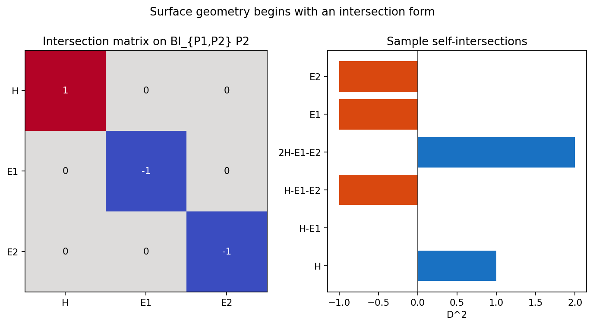
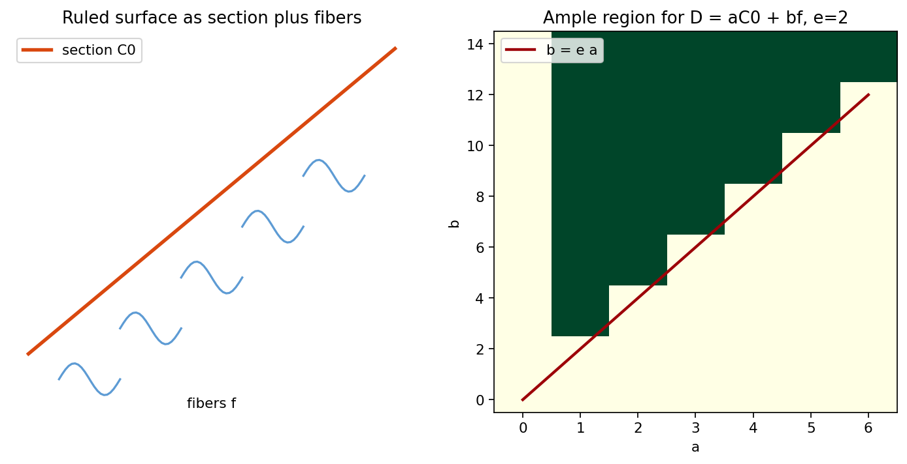
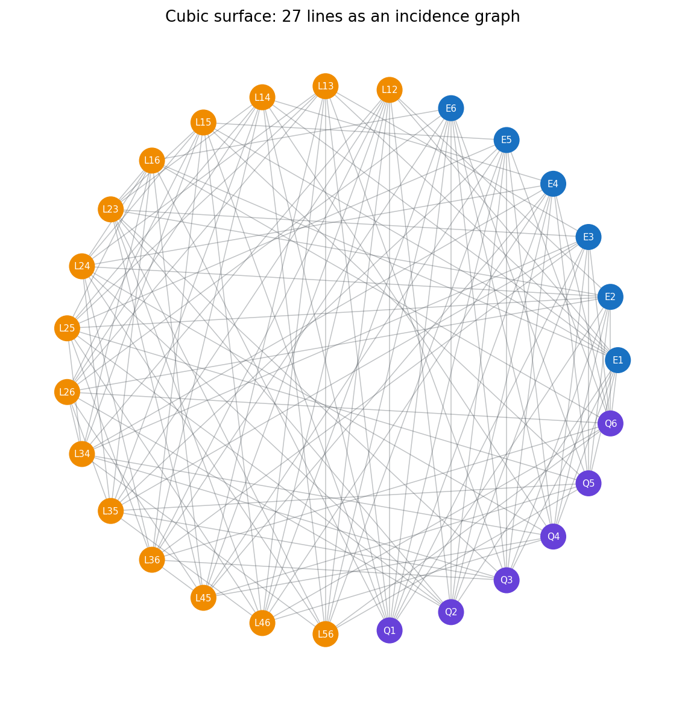

Curves-on-surfaces replace a single degree by a bilinear pairing.
Source grounding. Printed pages 356-423; PDF pages 371-438.
Notebook: Algebraic-Geometry/chapter-05-surfaces/05-surfaces.ipynb
Intersection forms, adjunction, Riemann-Roch.
Section and fiber coordinates organize positivity.
Blowups add exceptional negative classes.
Six blowups produce the 27-line lattice.
Maps factor through common resolutions.
Minimal models enter geography by \(K_X\).

For \(D=aH-\sum b_iE_i\) and \(D'=a'H-\sum b'_iE_i\), the blowup model uses
On a surface, a curve can meet a moved copy of itself negatively after a blowup. Degree becomes a quadratic datum, not just a linear count.
The genus of a nonsingular curve \(C\subset X\) is read from \(C^2\) and the canonical class.
After choosing an ample direction, the intersection form has one positive direction and negative behavior on the orthogonal complement.
Sample intersection eigenvalues:
-1-1+1The plus sign is the distinguished positive axis.
A divisor \(D\) on a nonsingular projective surface is ample exactly when the intersection arithmetic passes both tests:
for every irreducible curve \(C\subset X\).
Write divisor classes as \(D=aC_0+bf\). The integer \(a\) measures section direction; \(b\) measures fiber direction.

\(p_g=h^0(K_X)\)
\(q=h^1(\mathcal O_X)\)
section twist \(C_0^2=-e\)
The old surface data pulls back; the blowup records directions through \(P\) as a new exceptional curve.
Multiplicity is squared. A triple point can drop self-intersection by \(9\), which is why singularity resolution quickly changes the lattice.
The cubic surface appears from plane data once six point conditions are encoded by exceptional classes.
One class for each blown-up point.
Transforms of plane lines through two points.
Transforms of conics missing one point.

27 vertices
135 edges
degree 10 at every line
If \(C\cong P^1\) and \(C^2=-1\), then \(C\) is contractible to a nonsingular point.
A nonsingular surface is minimal when no contractible exceptional curve remains.
Rational and ruled surfaces; birational models start here.
K3 and abelian behavior; canonical class is numerically special.
Elliptic surfaces; fibration controls pluricanonical image.
General type; pluricanonical maps reveal birational geometry.
The notebook artifact records families by Kodaira dimension and birational markers.
\(D\cdot D'\) organizes divisor classes.
\(aC_0+bf\) turns positivity into inequalities.
\((C')^2=C^2-m^2\) tracks local changes.
Incidence is computed by line-class products.
Computational audit trail. source-coverage.json, visual-storyboard.json, surface-invariant-checks.json, and final-sanity.json verify the section anchors, artifact inventory, intersection eigenvalues, ruled grid, strict-transform formula, cubic incidence graph, and classification lab.